Notebook source code: notebooks/06_analyze_digital_twin_V4.ipynb
Analyze a Digital Twin model of Macaque Visual Cortex area V4#
Set Up + Imports#
In [1]:
import setup
setup.main()
%load_ext autoreload
%autoreload 2
# %load_ext jupyter_black
import torch
import os
import numpy as np
from nnvision.models.ptrmodels import task_core_gauss_readout
from mei.modules import EnsembleModel
import matplotlib.pyplot as plt
import neurometry.datasets.synthetic as synthetic
from neurometry.estimators.dimension.dimension import plot_dimension_experiments
from neurometry.estimators.dimension.dimension import skdim_dimension_estimation
from neurometry.estimators.topology.topology_classifier import TopologyClassifier
os.environ["GEOMSTATS_BACKEND"] = "pytorch"
import geomstats.backend as gs
Working directory: /notebooks/neurometry/neurometry
Directory added to path: /notebooks/neurometry
Directory added to path: /notebooks/neurometry/neurometry
Connecting kwilleke@134.76.19.44:3306
INFO: Using pytorch backend
Load model#
In [3]:
weights_path = os.path.join(os.getcwd(), "datasets/digital_twins/weights")
In [4]:
def load_v4_model_from_weights(base_dir):
model_fn = task_core_gauss_readout
model_config = {
"input_channels": 1,
"model_name": "resnet50_l2_eps0_1",
"layer_name": "layer3.0",
"pretrained": False,
"bias": False,
"final_batchnorm": True,
"final_nonlinearity": True,
"momentum": 0.1,
"fine_tune": False,
"init_mu_range": 0.4,
"init_sigma_range": 0.6,
"readout_bias": True,
"gamma_readout": 3.0,
"gauss_type": "isotropic",
"elu_offset": -1,
}
data_info = {
"all_sessions": {
"input_dimensions": torch.Size([64, 1, 100, 100]),
"input_channels": 1,
"output_dimension": 1244,
"img_mean": 124.54466,
"img_std": 70.28,
},
}
# fill the list ensemble names with task driven 01 - 10
ensemble_names = [
"task_driven_ensemble_model_01.pth.tar",
"task_driven_ensemble_model_02.pth.tar",
"task_driven_ensemble_model_03.pth.tar",
"task_driven_ensemble_model_04.pth.tar",
"task_driven_ensemble_model_05.pth.tar",
]
ensemble_models = []
for f in ensemble_names:
ensemble_filename = os.path.join(base_dir, f)
ensemble_state_dict = torch.load(ensemble_filename)
ensemble_model = model_fn(
seed=0,
dataloaders=None,
**model_config,
data_info=data_info,
)
ensemble_model.load_state_dict(ensemble_state_dict)
ensemble_models.append(ensemble_model)
task_driven_ensemble = EnsembleModel(*ensemble_models)
return task_driven_ensemble
In [5]:
model = load_v4_model_from_weights(weights_path)
Load images#
In [6]:
images_path = os.path.join(os.getcwd(), "datasets/digital_twins/images/rotations.npy")
In [7]:
images = np.load(images_path)
images.shape
Out [7]:
(100, 100, 100, 3)
In [8]:
# Make images grayscale
images = images.mean(axis = 3)
images.shape
Out [8]:
(100, 100, 100)
In [9]:
# Select 10 images with a step size of 10
indices = list(range(0, 100, 10)) # This will give [0, 10, 20, ..., 90]
selected_images = [images[i] for i in indices]
# Create a figure with 1 row and 10 columns to display the images
fig, axes = plt.subplots(1, 10, figsize=(20, 2)) # Adjust figsize as needed
# Plot each image on a separate axis
for i, ax in enumerate(axes):
ax.imshow(selected_images[i], cmap='gray')
ax.axis('off') # Turn off axis labels for a cleaner look

In [10]:
# Prepare image shape to present to V4 model
images_model = images[:,:,:,np.newaxis].transpose(0, 3, 1, 2)
images_model.shape
Out [10]:
(100, 1, 100, 100)
In [11]:
# Normalize images based on training data mean and std
img_mean = 124.54466
img_std = 70.28
images_model-=img_mean
images_model/=img_std
Get neural manifold of V4 neurons to images#
In [13]:
device = torch.device('cuda' if torch.cuda.is_available() else 'cpu')
# Move model and input to the same device
model = model.to(device)
images_model = torch.from_numpy(images_model)
images_model = images_model.to(device)
# Ensure consistent tensor types (using float for both)
model = model.float()
images_model = images_model.float()
# Pass the input to the model
output = model(images_model, data_key='all_sessions')
In [14]:
# Make into numpy array
output = output.detach().cpu().numpy()
output.shape
Out [14]:
(100, 1244)
Perform analyses on the manifold#
In [ ]: